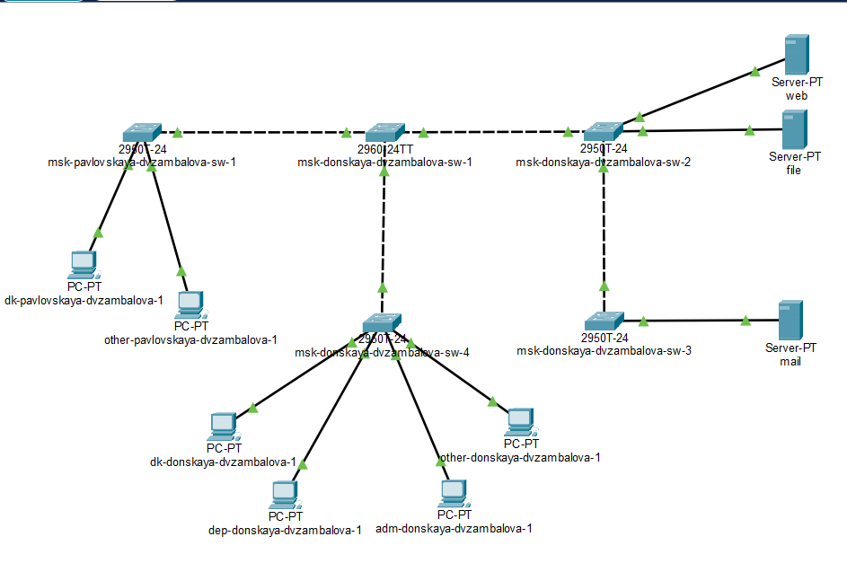

Провести подготовительную работу по первоначальной настройке
коммутаторов сети.
Задание
Требуется сделать первоначальную настройку коммутаторов сети,
представленной на схеме L1. Под первоначальной настройкой понимается
указание имени устройства, его IP-адреса, настройка доступа по паролю к
виртуальным терминалам и консоли, настройка удалённого доступа к
устройству по ssh. При выполнении работы необходимо учитывать соглашение
об именовании.
Выполнение лабораторной
работы

Размещение коммутаторов и оконечных
устройств согласно схеме сети L1